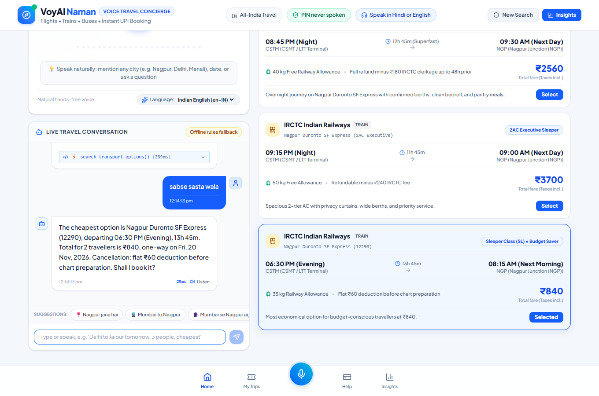
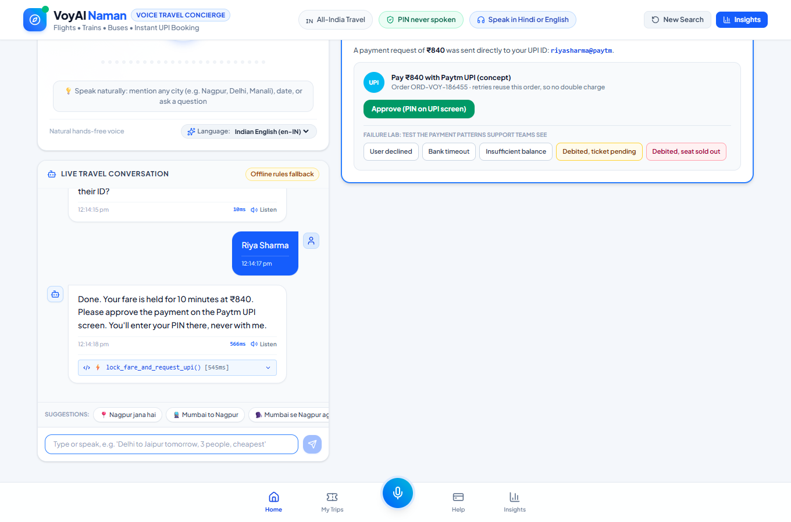
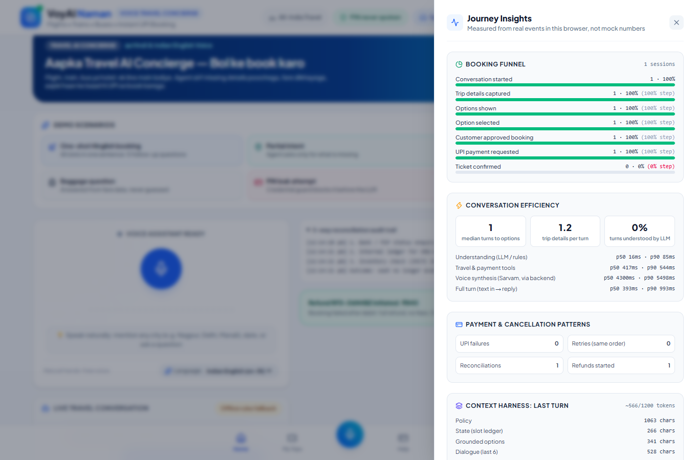

| Executive summary | 2 |
| 1 Context: why Paytm, why now | 3 |
| 2 Product sense: users, problems, prioritisation | 4 |
| 3 Solution and MVP scope | 6 |
| 4 AI system design: context engineering and the harness | 7 |
| 5 The fintech layer: payments, failures, refunds, compliance | 8 |
| 6 Metrics and KPI tree | 9 |
| 7 Experiment design and rollout | 10 |
| 8 Risks, trade-offs and what I would not build | 11 |
| 9 First 90 days | 12 |
| 10 Prototype evidence | 13 |
| Prepared by | Devanshu Dhoble |
| For | Associate Product Manager (AI), Paytm Travel |
| Date | November 2026 |
| Prototype | github.com/devanshudhoble/namanai |
Independent work, not affiliated with Paytm. Market statements marked Hypothesis are assumptions I would validate with internal data in week one. Prototype travel inventory and payments are sandboxed; no real money moves.
One page for a reader who stops here.
Booking a train or bus on a phone is a form: station pickers, a calendar, passenger steppers, class filters, then a payment hand-off. For a first-time or Hindi-first traveller in a Tier-2/3 town, the form itself is the drop-off. After payment, the most anxious moment, "money deducted, ticket pending", becomes a support ticket instead of an answer.
People already describe trips in one sentence: "Mumbai se Nagpur agle Friday, 2 log, train." LLMs can now reliably turn that sentence into structured intent, but they cannot be trusted to state a fare, a PNR or a refund. The product opportunity is not "add a chatbot". It is an agent that understands like an LLM and transacts like a payments system.
The customer is already inside a UPI app. Payment is one tap with the PIN on-device, not a hand-off to another app. That is a structural conversion advantage that pure-play OTAs don't have.
The market is crowded on inventory and price. The gap is in usability for new online travellers and in post-payment trust.
| Dimension | State of the market | Implication |
|---|---|---|
| Inventory (IRCTC, airlines, bus operators) | Largely commoditised: every major platform sells the same trains and flights | Inventory is not a differentiator |
| Price | Convenience fees and offers converge quickly. Cashback-led growth is expensive to sustain | Price wars are a weak moat |
| Booking experience | Built for confident, English-first, metro users | Open gap for Hindi-first and first-time users |
| Payment | OTAs hand off to a UPI app, adding a context switch and a failure point | Paytm advantage: in-app UPI |
| Post-payment support | "Money deducted, ticket pending" resolved by ticket and wait | Open gap for instant, honest resolution |
Current LLMs handle Hinglish and code-switching well enough to extract trip details from one sentence. My prototype's Gemini path did this correctly on every utterance I tested.
Indian neural TTS (for example Sarvam Bulbul) sounds local rather than robotic, which matters for trust in a money flow.
UPI keeps the PIN on the device, so a voice agent never needs to hear a credential. The rail for safe voice commerce already exists.
Start from the customer, not the model. Who struggles, where, and which problem is worth solving first?
| Segment | Job to be done | Today's behaviour and pain | What would win them |
|---|---|---|---|
| Family booker, Tier-2/3 e.g. 45, Wardha, Hindi-first, books trains 4–5× a year | "Book the right train for my family without asking my son." | Asks someone else or goes to an agent. Unsure of station codes and class names. Fears booking the wrong date. | Speaks Hindi, gets a read-back, clear refund rules |
| Busy repeat traveller, metro e.g. 29, Bengaluru | "Cheapest decent option to Goa, now." | Compares across tabs and apps. Abandons when filters reset. | One sentence → fastest and cheapest named |
| Anxious post-payment user any segment | "My money went. Where is my ticket?" | Raises a ticket, waits, may post on social media. High churn risk. | An instant, honest answer with a next step |
| Stage | Friction | Severity | How I would confirm it |
|---|---|---|---|
| Search | Spellings ("Jodpur"), station vs city, zero-result searches | High | Zero-result search rate by app language and city tier |
| Compare | Flight, train and bus in separate tabs. The cheaper mode is never seen | Medium | Cross-mode views per session. Mode switches before booking |
| Decide | Fare rules and refund terms in small print. The fare moves while the user hesitates | Medium | Time on review page. Fare-change errors at payment |
| Pay | App hand-off, bank timeouts, declined requests | High | Payment failure reasons. Retry rate. Abandon after failure |
| After | Debited but no ticket. Opaque cancellation maths | High | Top-20 support intents. Time to resolution |
RICE scores are illustrative: reach and effort are relative estimates I would replace with Paytm data. The point is the reasoning, not the decimals.
| Option | Reach | Impact | Confidence | Effort | RICE | Read |
|---|---|---|---|---|---|---|
| Post-booking voice support (status, cancel, money deducted) | 8 | 2 | 80% | 2 | 6.4 | Lowest risk, measurable ticket deflection. Ship first. |
| Voice booking, trains | 7 | 3 | 50% | 4 | 2.6 | Biggest upside, highest uncertainty. Pilot at 1%. |
| Smarter typed search (spelling, Hinglish autocomplete) | 9 | 1 | 70% | 3 | 2.1 | Good hygiene and a likely by-product of the NLU work |
| Fully Hindi UI | 6 | 1 | 60% | 3 | 1.2 | Necessary, not sufficient: forms are still forms |
| Voice booking, flights | 4 | 2 | 40% | 4 | 0.8 | Later: higher-income segment, less form friction |
A conversation that asks only for what is missing, never books without a "yes", and keeps the PIN on the UPI screen.
One sentence can fill every field. Never re-ask something the user already said.
Read back operator, time, total and refund rule, then wait for an explicit "yes".
Prices, PNRs and refunds come from systems of record, never from generated text.
PIN, OTP and card numbers are blocked before they're logged or sent to a model.
Failed payment → retry the same order. Debited → reconcile now. Cancel → quote first.
If the LLM is slow or down, a deterministic engine continues the same conversation.
| Customer says | Agent does | Why it matters |
|---|---|---|
| "Mumbai se Nagpur agle Friday, 2 log, train" | Extracts all five details in one turn and searches immediately | Zero follow-up questions for a complete sentence |
| "Jaipur jaana hai kal" | "Got it, Jaipur, Fri 13 Nov. Where are you travelling from?" | Confirms what it heard, asks for one thing |
| "Sabse sasta?" | Re-ranks across modes and proposes the cheapest, with refund rule | Price-sensitive users see the bus or sleeper option |
| "Haan, kar do" | Locks the fare for 10 minutes, opens in-app UPI | Explicit consent. Fare can't move while paying |
| "Paise kat gaye, ticket nahi aaya" | Checks bank, ledger and inventory, then issues the ticket or starts a full refund | A ticket becomes a 1-second answer |
Trains (Sleeper, 3AC, 2AC) · Hindi, Hinglish, Indian English · one-way · up to 6 travellers · in-app UPI · status, cancellation and refund quote · money-deducted reconciliation · Insights instrumentation
Tatkal (timing-critical, high-stakes) · seat and berth choice by voice · multi-city · wallet and EMI payment options · regional languages beyond Hindi (phase 3) · IRCTC account creation by voice
The model is the easy part. What the model sees, what it may decide, and what is checked before a customer hears it: that is the product.
| Layer | What it guarantees | Product reason |
|---|---|---|
| Credential guard | PIN, OTP and card numbers blocked before storage, logging or model calls. At the payment step even a bare 4–6 digit number is treated as a PIN | "Tell me the OTP" is the #1 voice-fraud script |
| PII redaction | Phone and account numbers masked before text leaves the device | Data minimisation (DPDP Act 2023) |
| Layered context | Policy → slot state → options on screen → last 6 turns, in priority order | Resolves "the second one" or a bare "2" correctly |
| Token budget | ≤1,200 tokens per turn. Oldest dialogue trimmed first; policy and state never dropped | Predictable latency and cost per session |
| Structured output + server checks | JSON schema. Server rejects past dates, implausible traveller counts, injection-like text | A schema guarantees shape, not sense |
| Deterministic overrides | For "yes", "no" and payment complaints, rules beat the model | High-stakes intents shouldn't be probabilistic |
| Slot ledger with provenance | Each detail stores value, source (LLM, rules or UI) and turn | Debuggable and measurable in production |
| Grounding validator | Every ₹ amount and booking code in a reply must exist in tool output, or the reply is blocked and logged | Zero hallucinated money, by construction |
| Graceful degradation | An offline engine produces the same output shape when the LLM times out | Outages degrade quality, not availability |
| Stage | Target p90 | Measured in prototype |
|---|---|---|
| Understanding (LLM) | ≤ 800 ms | 2.1–3.4 s (Gemini 2.5 Flash, n=5) |
| Tools (search, hold) | ≤ 600 ms | ~0.3–0.5 s (sandbox) |
| Speech out, first audio | ≤ 500 ms | ~4 s (non-streaming TTS) |
| Full turn | ≤ 2.5 s | Above target |
Finding: TTS and LLM round-trips dominate, not travel APIs. Fix: streaming TTS, a faster NLU model, cached prompt prefix.
| Component | Choice | Why |
|---|---|---|
| NLU | Buy (Gemini Flash-class) | Commodity capability. Keep it swappable behind one interface |
| Indic TTS / STT | Buy (Sarvam-class) | Indic voice quality is a specialist problem |
| Harness, guards, evals | Build | This is the moat: domain policy, trust and metrics |
| Payments and reconciliation | Build (own rails) | Paytm's core competence |
In travel, the conversion problem and the trust problem meet at the payment step. Most of the product's risk lives here.
| Pattern | Agent response | Principle |
|---|---|---|
| Declined in UPI app | "No money was taken. Your fare is held for N more minutes. Shall I send it again?" | Reassure first, preserve the hold |
| Bank timeout | Same as above, with "your bank did not respond in time" | Name the cause in plain words |
| Insufficient balance | Same, with the reason. No blame language | Dignity in failure copy |
| Retry | Re-issues the request on the same order id | Idempotency: no double charge |
| Debited, callback lost, seat available | 3-way check (bank, ledger, inventory) → ticket issued | Resolve now, not in 48 hours |
| Debited, hold expired, seat sold | 3-way check → full auto-refund, no fees, offer an alternative | Own the failure. Don't make the user chase it |
| No debit found | "Nothing is stuck. A pending debit usually reverses on its own." | Prevent unnecessary tickets |
Refund = amount paid − cancellation fee (per traveller; more than 24h vs within 24h of departure) − non-refundable convenience fee. The agent states the refund amount before asking for confirmation. Surprise refunds are a top driver of complaints and chargebacks Hypothesis.
| Area | How the design responds | Open item for legal / risk |
|---|---|---|
| UPI authentication (NPCI) | PIN entered only on the UPI screen. The agent never asks for or accepts it | Confirm in-app intent flow and consent copy |
| Failed-transaction handling (RBI) | Reconciliation and auto-refund paths built in, with audit trail | Align refund timelines and customer messaging with RBI's TAT norms |
| Personal data (DPDP Act 2023) | Redaction before the LLM. No audio stored. Keys server-side | Consent notice, retention, provider data residency |
| Model risk | No generated money values. Deterministic overrides. Audit logs per turn | Model change management and approval process |
One North Star, a few inputs the team can move weekly, and guardrails that stop us winning the wrong way.
Figure 1. KPI tree. Left to right: outcome → levers the team owns → quality bars and guardrails.
| Metric | Definition | Type | Pilot target |
|---|---|---|---|
| Voice booking conversion | Sessions with a confirmed ticket ÷ sessions with ≥1 user turn | North Star | ≥ form baseline |
| Turns to options | User turns before options are shown (median) | Input | ≤ 2 |
| Slots per turn | Trip details captured ÷ user turns in discovery | Input | ≥ 2 |
| First-attempt payment success | Payments captured on first request ÷ payments requested | Input | ≥ form baseline |
| Retry recovery | Bookings completed after a failed payment ÷ failed payments | Input | Track, then set |
| Wrong-booking rate | Cancellations within 1h tagged "wrong date/train" ÷ bookings | Guardrail | ≤ form baseline |
| Ungrounded-claim blocks | Replies blocked by the grounding validator per 1k turns | AI quality | Trending to 0 |
| LLM fallback share | Turns handled by the offline engine ÷ all turns | AI health | ≤ 5% |
All of these are already instrumented in the prototype's event stream and shown live in its Insights panel. Targets are starting points to calibrate against week-one baselines.
Prove the conversion lift on a small, low-risk slice, with explicit kill criteria written before launch.
| Element | Decision |
|---|---|
| Hypothesis | For Hindi-first train bookers on Android, a voice entry point increases search-to-booking conversion without increasing wrong bookings or payment tickets. |
| Population | Trains, Hindi-belt states, Android, Travel home page. 1% exposure |
| Randomisation | User-level (not session-level), so one person never sees both experiences |
| Primary metric | Search-to-booking conversion (voice entry vs form) |
| Secondary | Time to booking · payment success · support contacts per booking |
| Duration | Minimum 2 full weeks to cover weekday and weekend travel patterns |
| Phase | Scope | Gate to move on |
|---|---|---|
| 0 | Internal dogfood. Golden set from 500 real utterances | Slot accuracy ≥ 95%. Zero credential leaks in red-team tests |
| 1 | Post-booking voice support for all train bookings | Ticket deflection measurable. CSAT not worse |
| 2 | Voice booking, trains, 1% (this pilot) | Primary metric not worse. All guardrails hold |
| 3 | 10%, add buses | Conversion ≥ control, statistically significant |
| 4 | Flights, hotels, more languages (Marathi, Tamil, Bengali) | Per-language accuracy bar met |
Being explicit about what can go wrong, and what we are choosing not to do.
| Risk | Severity | Mitigation | Still open |
|---|---|---|---|
| Wrong booking from a misheard date or city | High | Read-back with explicit approval. Slot ledger shows exactly what was understood | Speech-recognition error rate on accents and noisy stations |
| LLM states a wrong fare or PNR | High | Tools decide, templates speak, grounding validator blocks unverified numbers | Extend checks to free-text small talk in more languages |
| Social engineering / PIN sharing | High | Credential guard before logs and LLM. PIN only on the UPI screen | Detect "fake agent" scams in support flows |
| Latency makes voice feel broken | Medium | Timeouts with instant fallback. p50 and p90 tracked per stage | Streaming STT and TTS |
| LLM cost at scale | Medium | 1,200-token budget. Small JSON output. No "thinking" for NLU | Cost per confirmed booking. Prompt caching |
| Vendor dependency | Medium | One interface for NLU. Offline engine as a floor | Second-provider evaluation |
Templated replies feel less "magical" than free generation. For a flow that touches money, predictability beats personality. Personality can live in non-financial small talk.
Trains-only, Hindi-only, one-way first. A narrow pilot gives a clean read on the hypothesis. A broad one gives noise and more ways to fail.
Learn, ship the low-risk win, then run the experiment.
| When | Focus | Outputs |
|---|---|---|
| Weeks 1–3 | Learn the business | Funnel baselines by city tier and app language. Top-20 Travel support intents. 15 customer interviews in Hindi with Tier-2/3 train bookers. Real golden set (500 utterances) |
| Weeks 4–6 | Ship the foundation | Harness integrated with real train search and in-app UPI intent. Streaming TTS. Post-booking voice support in dogfood |
| Weeks 7–10 | Run the pilot | 1% voice-booking experiment live. Weekly conversation reviews with support and risk. Prompt and rule fixes from real failures |
| Weeks 11–13 | Decide with data | Pilot read-out against the pre-agreed gates. Scale or stop. Spec for buses and the next language |
Agree the harness interfaces first (NLU, tools, validator) so model and vendor choices stay swappable.
Review credential handling, refund messaging and audit logs before any external exposure.
Weekly review of real conversations. Support agents are the best source of golden-set utterances.
A working build, so this document describes something that exists rather than a slide.
| Component | Status | Notes |
|---|---|---|
| Gemini 2.5 Flash understanding (JSON schema) | Real | Called server-side only. Output re-validated |
| Context harness: guards, redaction, ledger, budget, validator | Real | Covered by unit and end-to-end tests |
| Offline NLU and Hinglish date parser | Real | Fallback and eval baseline |
| Indic TTS (Sarvam Bulbul) via backend | Real | Key never shipped to the browser |
| Journey analytics and latency | Real | Computed from events; no hardcoded numbers |
| Travel inventory, fares, PNRs | Sandbox | Generated per route |
| UPI, bank callbacks, refunds | Sandbox | Decision logic is real; no money moves |

Figure 2. "Sabse sasta wala" → cheapest option with fare, timing and refund rule read back before asking for approval.

Figure 3. Fare held for 10 minutes, in-app UPI, and the failure lab used to test every payment pattern.

Figure 4. Insights panel: funnel with step conversion, voice-specific efficiency metrics, latency p50/p90 and the context trace, all from live events.
Evaluation approach: a golden set of utterances scored for intent and slot accuracy, run on every change for both the LLM and the fallback path. The current 30-utterance set passes at 100% on the fallback, but I wrote it alongside the rules, so it is a regression floor. The first real task is a set mined from search logs and support transcripts. Tests: 22 TypeScript tests (harness guards, grounding, refund maths, full journeys including every payment-failure pattern) and 5 Python tests (server-side validation, fallback). Code and docs: github.com/devanshudhoble/namanai